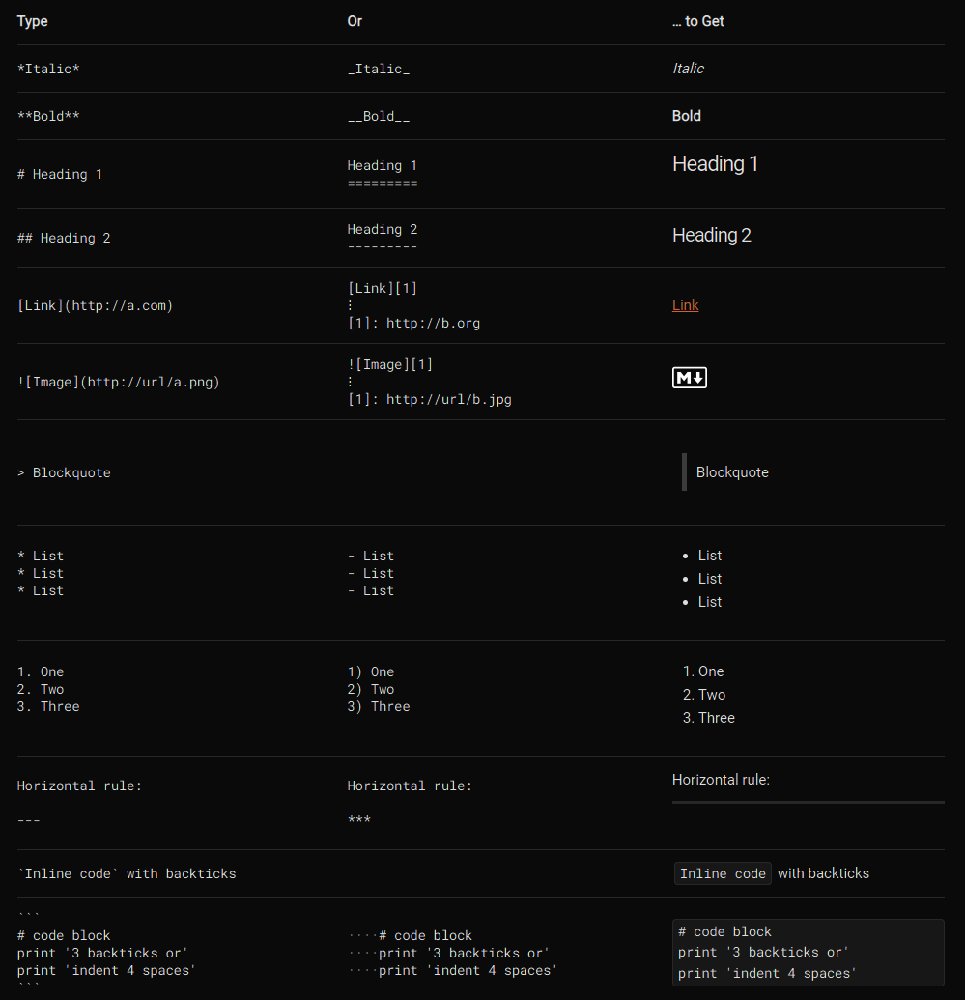

↩2219010857
It's been almost a week since the start of the course and we have basically covered a new topic each day of class. The information is coming in thick and fast, its been great so far.
The main topics we have covered so far are:
- Markdown Notation
- Command Line Tools
- Github Syntax
Markdown Notation
Markdown is a simple code syntax which allows for quickly adding formatting while you are typing, allowing for a more fluid note taking experience. The simple tools allow for adding three levels of headers, italics, bold, tables, inline code and blocks, and more.
I have been using Obsidian throughout the lessons to quickly document new terms, operators and ideas as I run into them.
A summary of the Markdown Syntax I found online is linked below:
Command Line Tools
This linked directly into the fundamentals of the cmd tool. A copy of my notes is inserted below:
cd ~ to go homemkdir make a directory
mv move
echo 'blah' > sample.txt add overwrite sample.txt with blah
echo 'blah' >> sample.txt add blah to sample.txt
cp copy
diff compare two files
man manual
ls to list files and directories
ls -a to show hidden files
cat to display read out of file
rm to remove files
rm --recursive to remove contents of a folder
vim to open vim editor
a to enter insert mode
v to enter visual mode
dd to delete line
shift+ZZ to save and exit
:q to quit without saving
There are probably more that I have forgotten for the time being. I can always update this note as I continue to learn more about the cmd.
Github Syntax
Taking what we learnt previously, we immediately jumped into the world of github. Its a tool which allows the safe and efficient workflow of the production of code either privately or collaboratively. Users can create repositories and communicate to the servers through the cmd using the git syntax. This was a bit of a steeper learning curve than the first couple of concepts, but slowly it starts to make sense. Here's a excerpt of my previous notes on the syntax.
git init
to initialize a git repo
git cloneto clone an existing repo
git addadds modified file to the staging area
git statusto see what files are in the staging area
git commitwrite a header and a body message, save. sends file to git.
git commit -amskips the git add step by -adding all modified files
git mergemerge local copy of files with that of repo
git logto see what you did
git log --onelineto see log in simplified view
git branchcreate a new branch
git chekcoutnavigates to new branch
git checkout -b "branch name"git branch and git checkout in one line
git pushpush merged files to repo
git pullpull files from repo to local copy
git fetchlist files from repo without pulling
Again there are probably some things I missed but as I interact more with github I will update the notes I have.
cya.